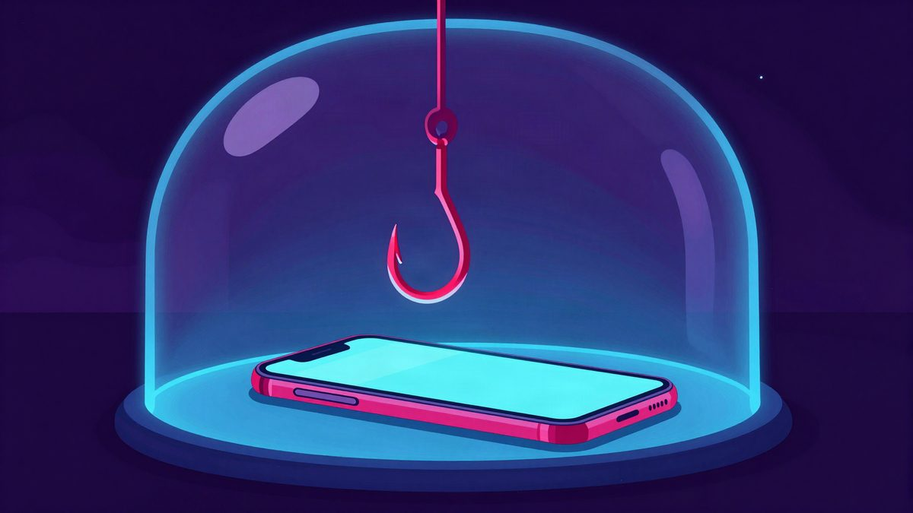

Google Messages dobiva Enhanced Protection: Gemini traži prevare u porukama i poveznicama

Google je počeo uvoditi Enhanced Protection u aplikaciji Google Messages za Android. Funkcija koristi Gemini za prepoznavanje prevara i opasnih poveznica, a treba je ručno uključiti u postavkama. Izvor ne navodi dostupnost u Europi ni u Hrvatskoj.
Google je počeo uvoditi Enhanced Protection, novu sigurnosnu funkciju u aplikaciji Google Messages za Android. Cilj joj je zaštititi korisnike od neželjenih poruka, internetskih prevara i zlonamjernih poveznica. Prema pisanju 9to5Googlea, funkcija se postupno uvodi.
Glavna novost je prepoznavanje prevara u razgovorima s nepoznatim pošiljateljima. Dosadašnja analiza uglavnom se odvijala na uređaju. Novi sustav dodatno koristi Gemini modele u oblaku, koji bi trebali bolje razumjeti kontekst razgovora i uočiti pokušaje prevare. Google tvrdi da poruke pritom obrađuje tehnologijom Private AI Compute, koja bi trebala omogućiti obradu u zaštićenom okruženju uz očuvanje privatnosti.
Provjera poveznica
Druga novost odnosi se na poveznice u porukama. Sustav koristi lokalni model Gemini Nano i informacije s interneta kako bi procijenio je li poveznica potencijalno opasna prije nego što je korisnik otvori.
Ova mogućnost zasad je dostupna samo na odabranim novijim uređajima. To su Pixel 10 i noviji modeli, serija Galaxy S26 te sklopivi Samsungovi mobiteli Galaxy Z Flip 8 i Z Fold 8.
Google je redizajnirao i sigurnosna upozorenja. Ona sada korisniku daju više informacija prije otvaranja sumnjive poveznice. Cilj je smanjiti mogućnost da netko nepromišljeno otvori poveznicu koju mu je poslao nepoznati broj.
Funkciju treba uključiti ručno
Enhanced Protection se neće automatski uključiti svim korisnicima. Treba ga aktivirati u postavkama aplikacije, u izborniku Protection & safety. Tamo se može odabrati napredna ili standardna zaštita.
Uvođenje je tek počelo, a ovisi i o uređaju.
Izvor: Bug.hr